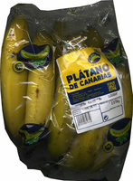
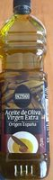
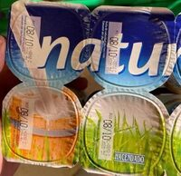
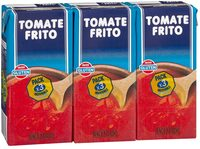
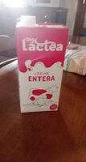
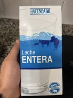
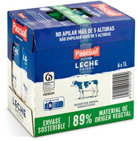
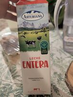

Casa · 14 lines

PlátanosFruta 1 kg
Aceite de oliva virgen extraHacendado · 1 L 1
Yogur naturalHacendado · Pack 6 1
Tomate fritoHacendado · 400 g 3
Leche entera de vaca 0,95 € Details
Leche entera 0,89 € Details
Leche entera Pack 6 6,54 € 1,09 €/L Details
Leche entera 1,19 € Details Product already in your list Leche entera 2